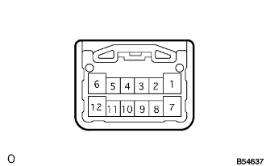

パワーウインドウシステム ＥＣＵ端子配列 |
|
マスタスイツチ点検
マスタスイツチのコネクタを切り離す。
SST(トヨタエレクトリカルテスター)を使用して、車両側コネクタ各端子の電圧および導通を点検する。
| 端子番号 | 項目 | 測定条件 | 基準 |
|---|---|---|---|
| 2(GND)←→ボデーアース | 導通 | 常時 | 導通あり |
| 10(PWR)←→2(GND) | 電圧 | 常時 | 10-14V |
| 20(IG)←→2(GND) | 電圧 | イグニツシヨンスイツチOFF→ON | 0V→10-14V |
| 11(D)←→1(U) | 導通 | 常時 | 導通あり |
コネクタを接続し、パワーウインドウレギユレータモータのリセットを行う。(要領は 参照)
参照)
コネクタ各端子間の電圧を点検する。
| 端子番号 | 項目 | 測定条件 | 基準 |
|---|---|---|---|
| 1(U)←→2(GND) | 電圧 | イグニツシヨンスイツチON、マスタスイツチ運転席用スイツチOFF→UP(マニュアル操作) | 0V→10-14V |
| 1(U)←→2(GND) | 電圧 | イグニツシヨンスイツチON、運転席ドアガラス全開→マスタスイツチ運転席用スイツチUP(オート操作)→ドアガラス全閉 | 0V→10-14V→0V |
| 11(D)←→2(GND) | 電圧 | イグニツシヨンスイツチON、マスタスイツチ運転席用スイツチOFF→DOWN(マニュアル操作) | 0V→10-14V |
| 11(D)←→2(GND) | 電圧 | イグニツシヨンスイツチON、運転席ドアガラス全閉→マスタスイツチ運転席用スイツチOFF→DOWN(オート操作)→ドアガラス全開 | 0V→10-14V→0V |
| 6(WLSW)←→2(GND) | 電圧 | イグニツシヨンスイツチON、ウインドゥロックスイッチNORMAL→LOCK | 10-14V→0V |
| 19(VCC)←→12(SGND) | 電圧 | イグニツシヨンスイツチON、マスタスイツチ運転席用スイツチOFF→UPおよびOFF→DOWN(マニュアル操作) | 0V→10-14V |
| 17(DCTY)←→2(GND) | 電圧 | 運転席ドア全閉→全開 | 10-14V→0V |
|  |
スイツチ点検
スイツチのコネクタを切り離す。
SST(トヨタエレクトリカルテスター)を使用して、車両側コネクタ各端子の電圧および導通を点検する。
| 端子番号 | 項目 | 測定条件 | 基準 |
|---|---|---|---|
| 7(GND)←→ボデーアース | 導通 | 常時 | 導通あり |
| 12(B)←→7(GND) | 電圧 | 常時 | 10-14V |
| 1(D)←→6(U) | 導通 | 常時 | 導通あり |
コネクタを接続し、パワーウインドウレギユレータモータのリセットを行う。(要領は参照)
コネクタの各端子間の電圧を点検する。
| 端子番号 | 項目 | 測定条件 | 基準 |
|---|---|---|---|
| 6(U)←→7(GND) | 電圧 | イグニツシヨンスイツチON、スイツチOFF→UP(マニュアル操作) | 0V→10-14V |
| 6(U)←→7(GND) | 電圧 | イグニツシヨンスイツチON、助手席ドアガラス全開→スイツチUP(オート操作)→ドアガラス全閉 | 0V→10-14V→0V |
| 1(D)←→7(GND) | 電圧 | イグニツシヨンスイツチON、スイツチOFF→DOWN(マニュアル操作) | 0V→10-14V |
| 1(D)←→7(GND) | 電圧 | イグニツシヨンスイツチON、助手席ドアガラス全閉→スイツチOFF→DOWN(オート操作)→ドアガラス全開 | 0V→10-14V→0V |
| 11(PCT)←→7(GND) | 電圧 | イグニツシヨンスイツチON、ウインドゥロックスイッチNORMAL→LOCK | 10-14V→0V |
| 5(VCC)←→8(SGND) | 電圧 | イグニツシヨンスイツチON、スイツチOFF→UPおよびOFF→DOWN(マニュアル操作) | 0V→10-14V |